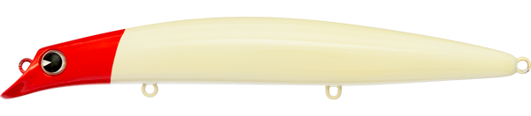
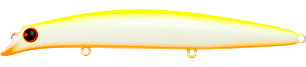
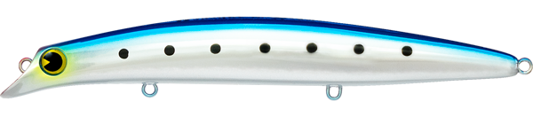
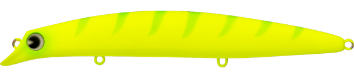
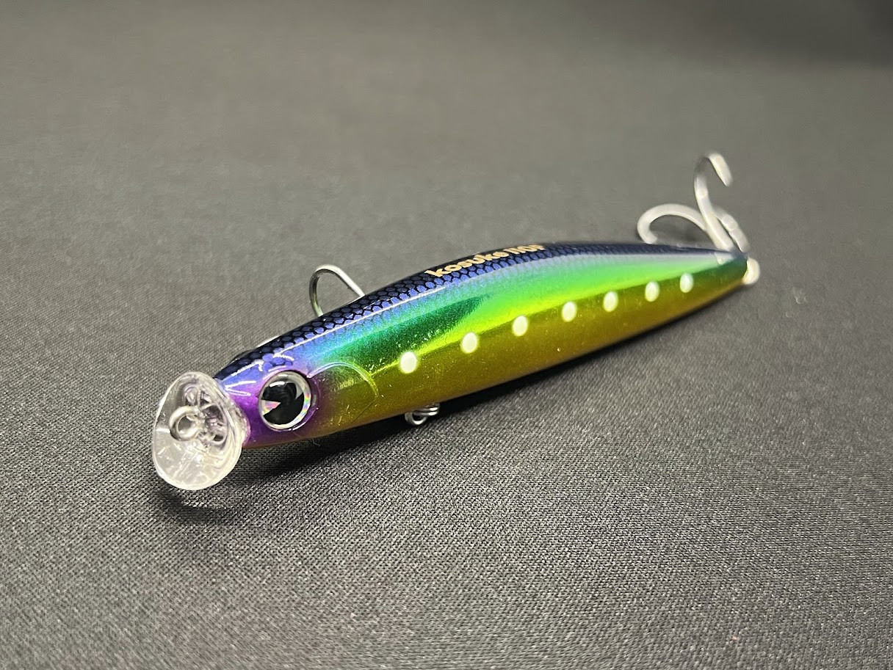

サスケ140真裂波
（sasuke 140 真裂波）
サスケ140真裂波（sasuke 140 真裂波）はima（アイマ）のフローティングミノーです。
imaのフラッグシップモデル「裂波」の名を継承する140mmモデル。裂波の代名詞である“魚を寄せる”ウォブンロールアクションはそのままに、重心移動システム「MRD」の搭載でシリーズ随一の飛行安定性を実現しているのが最大の魅力です。

画像出典:アイマ公式HP
スペック
- メーカー
- ima（アイマ）
- タイプ
- フローティングミノー（重心移動 MRD）
- 全長
- 140mm
- 自重
- 23g
- レンジ
- 60〜100cm
- アクション
- ウォブンロール
- フック
- #4
- リング
- #3
- 飛距離
- 最長75m
- ターゲット
- シーバス
- 価格
- 2,640円（税込）
▼今すぐチェック

サスケ140真裂波の特徴
「裂波」の釣れるアクションに、MRDによる飛距離と立ち上がりの速さをプラスした140mm
-
裂波譲りの“魚を寄せる”ウォブンロール
キングオブソルトウォーターミノーと呼ばれる裂波シリーズ特有のウォブンロールアクションを継承。あらゆるシチュエーションで魚を引き寄せる艶かしい泳ぎが持ち味だ。
-
重心移動システム「MRD」で最長75m
MRDの搭載により安定した飛行姿勢を実現し、最長飛距離は75mを記録。すばやい立ち上がりで、着水後の泳ぎ出しも抜群だ。
-
スローからファストまで対応する浮力設定
絶妙な浮力設定で、スローからファストまで幅広い巻き速度に対応。河川・河口・サーフ・磯とフィールドを問わず使える。
サスケ140真裂波の使い方
基本はただ巻き。レンジ60〜100cmを安定して泳ぐので、まずはミディアムリトリーブで広く探り、魚の反応に合わせてスピードを上げ下げしていく。
スローに巻けばシャローでも使いやすく、流れのある河川ではアップクロスに投げて流れに乗せながら巻くのも有効。反応がない時はトゥイッチを入れて動きに変化をつけ、追ってきた魚に口を使わせます。
サスケ140真裂波の得意な状況
河川・河口・サーフ・磯など、広いエリアでシーバスを探したい状況が最大の出番。
飛距離が必要なポイントで、まず魚を寄せてサーチしたい時のパイロットルアーとして選びたい1本です。
ワンポイント
着水直後から泳ぎ出すので、着水と同時に糸ふけを取りながら巻き始めると、着水直後のバイトも拾いやすくなります。
より軽い操作感で使いたい時や、少しサイズを落としたい時は120mmの裂波に持ち替えると使い分けがしやすくなります。
サスケ裂波・裂風シリーズの使い分け
| モデル | 全長／自重 | 得意な場面 |
|---|---|---|
| 120 裂波 | 120mm／17g | フローティング・レンジ70〜90cm・コンパクトな裂波 |
| 120S 裂風 | 120mm／18g | シンキング・レンジ70〜100cm・風や流れに強い |
| 140 裂波 | 140mm／20g | フローティング・レンジ60〜100cm・シリーズの定番 |
| 140S 裂風 | 140mm／21g | シンキング・レンジ70〜100cm・140mmのシンキング版 |
| 140 真裂波 | 140mm／23g | フローティング・MRD搭載で飛距離と飛行安定性を強化（本記事のモデル） |
サスケには裂波（フローティング）と裂風（シンキング）の2系統があり、それぞれ120mm・140mmを展開。140真裂波は140裂波をベースに、重心移動システムMRDで飛距離を伸ばした進化版という位置づけだ。
オススメカラー
サスケ140真裂波は全16色展開（ほかに特別企画カラーあり）。シーバス狙いでオススメのカラーを厳選して紹介します。

#SRP14-001 RHミノーの定番レッドヘッド。状況を問わず1本持っておきたいパイロットカラー。

#SRP14-002 CBPチャートバックパール。濁りやナイトゲームでもシルエットがはっきり出る。

#SRP14-003 ウミベイト海のベイトをイメージしたナチュラル系。澄み潮やデイゲームに。

#SRP14-007 マットチャートギーゴマットチャートで視認性とシルエットの強さを両立。マズメ時や濁り潮に。
画像出典:アイマ公式HP
サスケ140真裂波に似ているルアー
-
 タイドミノースリム178F
DUO
詳細はこちら＞
タイドミノースリム178F
DUO
詳細はこちら＞
全長178mm・自重32gの重心移動フローティングミノー。磁力で重心を戻すMLSで着水直後から泳ぎ出す設計で、飛距離と立ち上がりを重視する考え方がサスケ140真裂波と共通する。
-

コスケ110F アイマ 詳細はこちら＞同じアイマのフローティングミノー。シャローを広く探るシーバスミノーとして、サイズを落としたい時にサスケ140真裂波と使い分けたい1本。
-
 ブローウィン140F
ブルーブルー
詳細はこちら＞
ブローウィン140F
ブルーブルー
詳細はこちら＞
同じ140mmクラスのフローティングミノー。河口やサーフで遠投して広く探るという狙いどころが重なる。